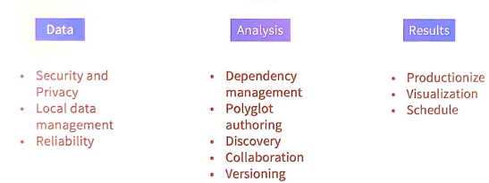
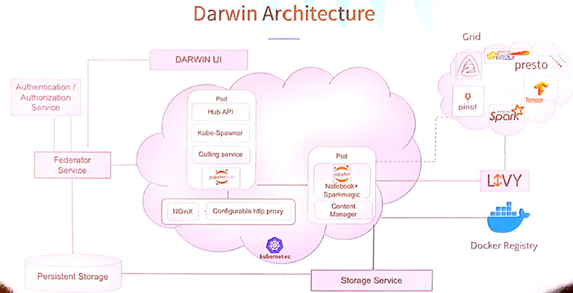
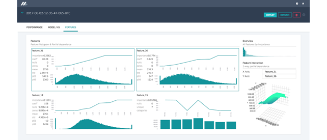
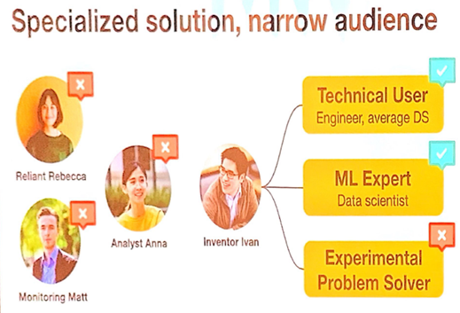
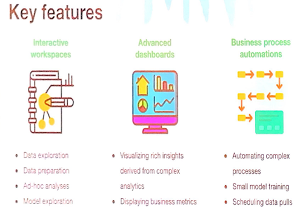
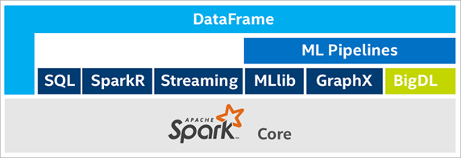
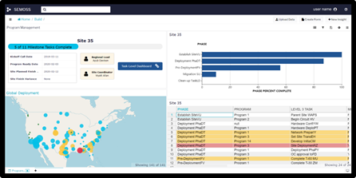
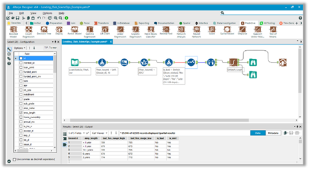

Takeaways from Strata Data Conference - NewYork City Sep 2019
I had the opportunity to attend 2 days of Strata Data Conference last month (9/25-26) at the Javits Convention center in Manhattan, NYC. This is my report of the conference and my opinion on a few things I noticed. If you want the gist, please read just the summary.
Executive summary¶
I noticed 3 important things
-
The number of hosted notebook solutions is only increasing. LinkedIn is building Darwin and Uber is building a Data Science Workbench. Both these firms admitted the difficulty in defining the skill set of a typical ‘data scientist’ and which tools, features and frameworks to provide. Uber decided to build two products – Michelangelo – a highly scalable ML engine, but with very limited features meant for a narrow user base and another product called Data Science Workbench for the broader set of users. LinkedIn acknowledged the challenges in building a hosted notebook solution. What was clear from these talks is, although the number of notebook products is proliferating, it is not necessarily simplifying. Both these products have a complicated setup requiring experts and are for internal users at this point.
-
The next big thing in deep learning might be distributed DL on Spark based CPU clusters. Intel is building a BigDL library for distributed DL on Spark. Most organizations of today are likely to have server farms with CPU than with GPU dedicated for DL and might be interested in utilizing this existing infrastructure for DL.
-
Several companies are building data catalogs or data management software for big data warehouses. Features include – building data manifests, data usage graphs, flagging & removal of PII. The overall theme is, following the big data hype, a number of companies have started collecting large amounts of business process data. They do not have a way to make sense of this massive collection or sometimes, even know what data they have. These vendors are building products to help manage these data warehouses.
Interesting talks I attended¶
LinkedIn – Darwin – a hosted notebook product¶
Darwin is a hosted notebook product for internal use. They plan to release this as open source project later. The challenges they are trying to solve is similar to our AGS notebook project.

Darwin tries to provide a self-service environment. User’s have access to private data, either local datasets or hosted on server. Analysts can write in Python or R and can share their notebooks across the team. They can version their notebooks, but they don’t yet support reviewing of notebooks, just a git integration. Finally, users can schedule the notebooks or ‘productionize by other means’ (which wasn’t clear from their description).
Below is the architecture of Darwin:

At the core, Darwin is based off JupyterHub. The notebook container image has the notebook, Python / R libraries and sparkmagic. A persistent storage is made available (not sure if mounted) via a storage service. The notebook instance connects to a Spark farm via an Apache Livy service and Jupyter sparkmagic. Data Science users of Darwin are encouraged to execute jobs on this Spark infrastructure (via Livy) thereby overcoming memory limits of their containers.
Users can also pick their Docker Image from an internal registry (artifactory was mentioned). The Docker containers of the Jupyter Hub are run on a Kubernetes cluster. The architecture of Jupyter Hub looked familiar to the default setup in Hub docs. The farm they execute processing against contains Spark (as seen earlier), Tensorflow, and some internal tools like Pinot analytic engine.
Democratizing ML at Uber¶
Uber spoke about Michelangelo a machine learning task engine. Their motivation: Internally, most teams found it difficult to get started with using ML to solve problems. They found it hard to access data and to collaborate. While the teams can build a ML solution using tools of their preference (scikit-learn, R, other tools), they found it hard to take it to production and scale it up. Only a very few teams had the know-how of building ML algorithms and the skill of deploying them in HPCs in a distributed and horizontally scalable manner. Further, teams that were capable were building custom solution and the DevOps and SREs found it hard to provide a simpler scaling solution to all data science teams. There wasn’t a standard to collaborate or replicate.

The speaker acknowledged the difference between data analysts and scientists if fuzzy and that building a comprehensive platform that can support varied use cases is not quite possible. Thus, Uber chose to build a ML platform that is specialized, narrow and only serves a narrow audience. Motto: build for a few, build for production.

Key features of Michelangelo

For all other users and use cases that Michelangelo did not serve, the built another product called ‘Data Science Workbench.’ DSW is a web-based GUI for self-service data science. It provides a notebook interface but has support for r-studio and shiny.
Uber then spoke about PyML, a Python library that sits at the intersection of Michelangelo and DSW. It allows users to deploy their custom ML solutions to production on Michelangelo. For models that require big-data, users build and train directly on Michelangelo’s Spark infrastructure. They are limited to a finite number of algorithms. For smaller datasets, users build using the library of their preference (scikit-learn for instance), package using PyML and deploy it as a Docker image on Michelangelo’s farm.
Today’s Uber is a large company (about 19,000 as of 2019) with several data science teams. The speaker shared some learnings in adopting ML:
How they ‘democratized ML’ at Uber:
- They started an internal conference for ML: Uber ML conf, and continued the conversation via brown bag events
- They held regular and repeat ML education events and bootcamps
- They marketed heavily championed the new way of doing ML – DSW for interactive dev and Michelangelo for deployment to production
- Coordinated planning with teams as new features were being planned
Design philosophy behind these two tools:
- Build for experts, but design for less technical users (which I interpreted as: allow customization, but start with intuitive UI and have good defaults)
- Build for unknown
- Don’t force workflows
- Develop iteratively, but constantly align with long term vision
- Build a community of scientists & non-scientists / technical & less technical users. Do not build separate products for these user groups.
My Takeaways from these talks:¶
It was clear that big Silicon Valley firms like to build their own data science platforms. This desire for custom tools is so deep that, when I asked LinkedIn why they did not make use of Azure notebooks (since MS bought LinkedIn), they simply said, we started with this effort before the acquisition. What was also clear is, building a custom data science platform is a very challenging business. There are several open source components and a variety of ways these can be architected.
Smaller firms and companies whose core product are not software development, are better off buying a hosted notebook solution (such as AGS Notebooks), than attempting to build one.
It is very hard to identify which features to include in a data science platform. Skillset and tools of preference amongst people with title ‘data scientist’ is so varied even within these two firms, let alone the broad data science industry. Uber and LinkedIn admitted the proliferation of Python libraries, ML and DL frameworks, their cascading dependencies is a challenge.
Companies and products seen at the Expo¶
Intel and BigDL – distributed DL on Spark:¶
Intel is a leading chip maker for general purpose computing but was late to the game when it came to making GPUs for deep learning. Most DL frameworks of today support Nvidia GPUs. Most organizations realize the power of DL, but to implement large scale DL solutions, they need to invest in new GPU powered hardware (either on prem or hired on the cloud). However, most of these orgs are likely to have generic server infrastructure (CPU powered) in place for existing business processes. Thus, Intel is building BigDL – a distributed deep learning library on Apache Spark. At the booth, Intel staff demonstrated performance benchmarks for running DL training on GPU vs distributed CPU.

Intel’s booth had a unique layout. Under a large Intel banner, I found 6 separate stations where business partners of Intel set up their booths. I spoke to
- H20.ai – automatic feature engineering, training and model development. It is an intelligent assistant for data scientists. The sales person was a former GIS analyst and was happy to meet someone from Esri.
- OneConvergence – another cloud native DL platform
- Domino datalab - another data science platform
SEMOSS: open source, browser based, UI driven analysis¶

It provides Python and R shells that allow users to write custom scripts, execute on a server back-end and get the results updated back on the browser. This is a challenging feature to achieve (maintaining data context) and their demo was of this feature was impressive. SEMOSS provides limited geospatial capabilities – viz and geocoding at best. For geocoding, they make use of Esri World Geocoding service.
Alteryx: GUI based, self-service data analysis platform¶

Alteryx has many features including geospatial analysis, but the staff at the booth were not equipped to talk to those aspects. Their emphasis was on the self-service nature.
Data catalog companies¶
Several companies are building data catalogs or data management software for your big data warehouse. Features include – building data manifests, data usage graphs, flagging & removal of PII. The overall theme is, following the big data hype, a number of companies have started collecting large amounts of business process data. They do not have a way to make sense of this massive collection and these vendors are building products to help manage these data warehouses.
Okera (data cataloger), Cryptonumerics (PII identification), Alation (data catalog), Waterline Data (data catalog), Matillion (data management), Dremio (fast data queries), Immuta (data governance), Ataccama (data cleanser/curator), Collibra (data lineage), Alluxio (data orchestration).
Summary¶
I found my time at Strata productive and informative. I wish I could have spent a bit more time at the Esri Booth, but the people I spoke to were thrilled to hear the analytical applications possible with spatial data. It was interesting to meet and talk to people that crossed over from being a GIS analyst to the Financial industry. The challenges that Uber and LinkedIn’s shared while building notebook and ML solutions were insightful.